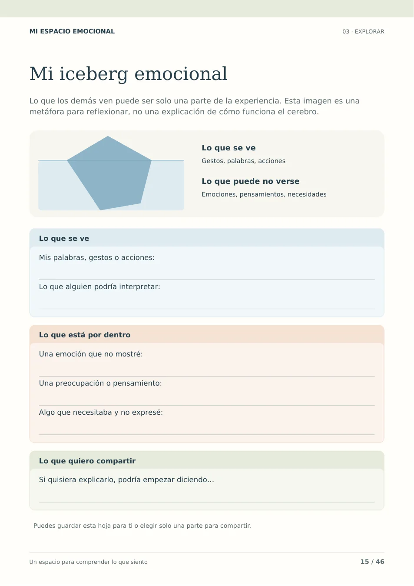
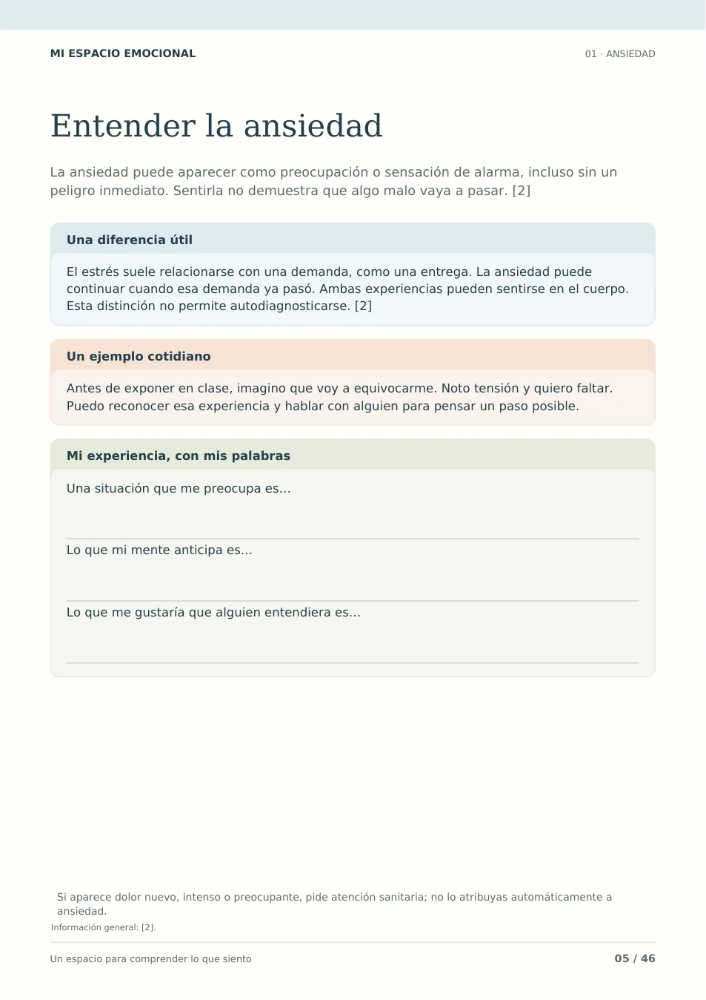
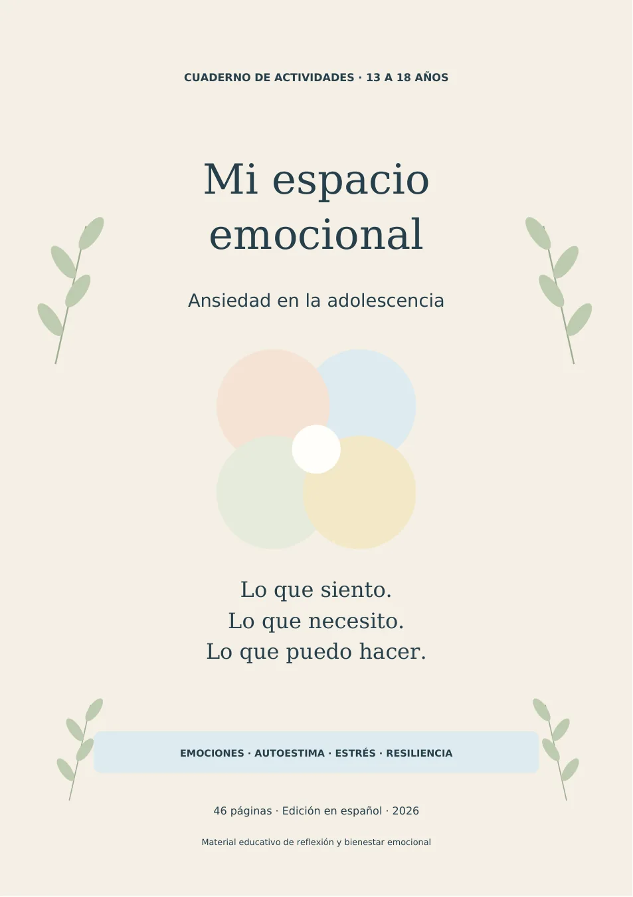
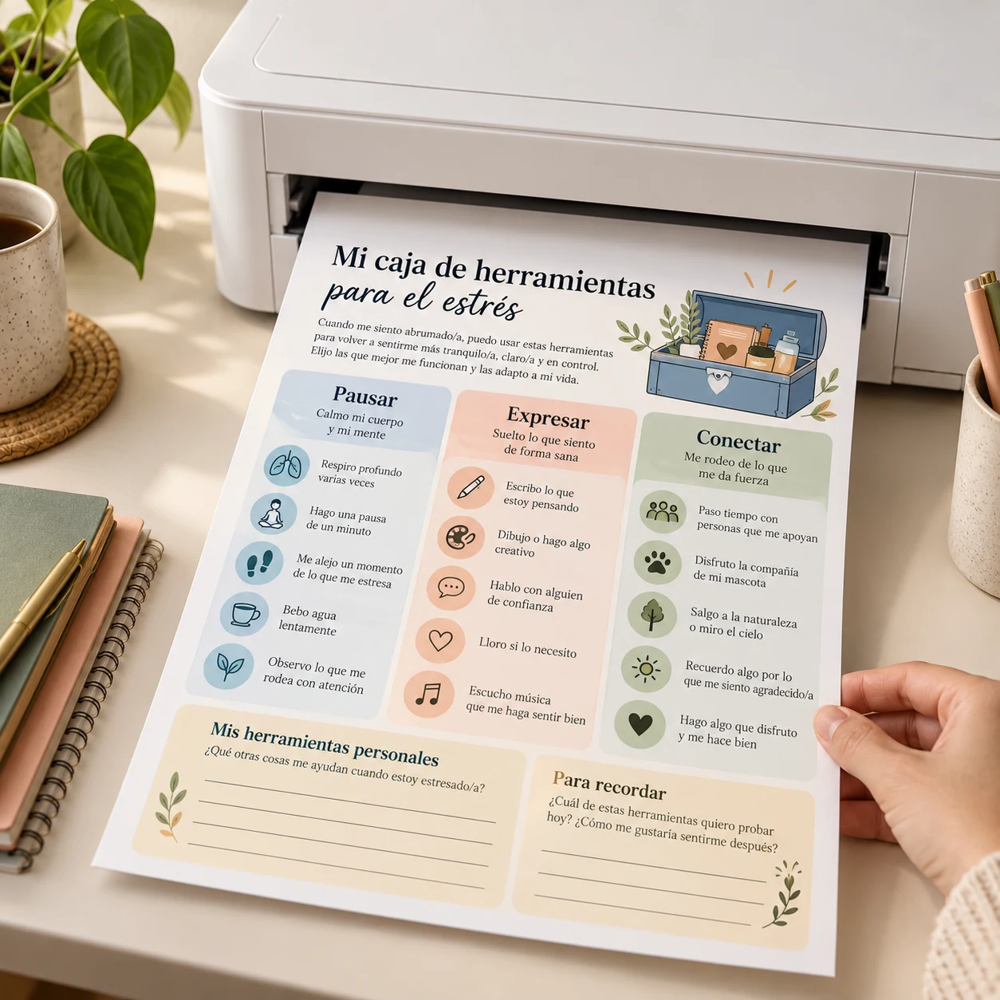
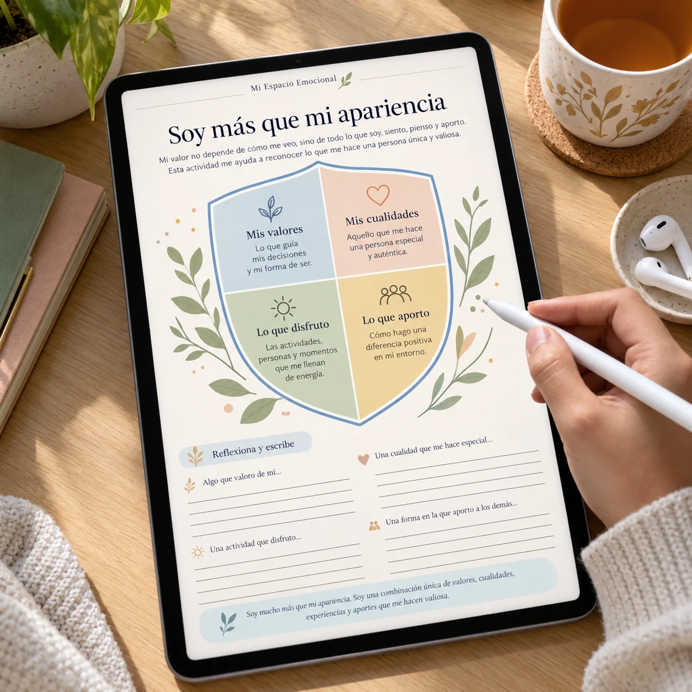
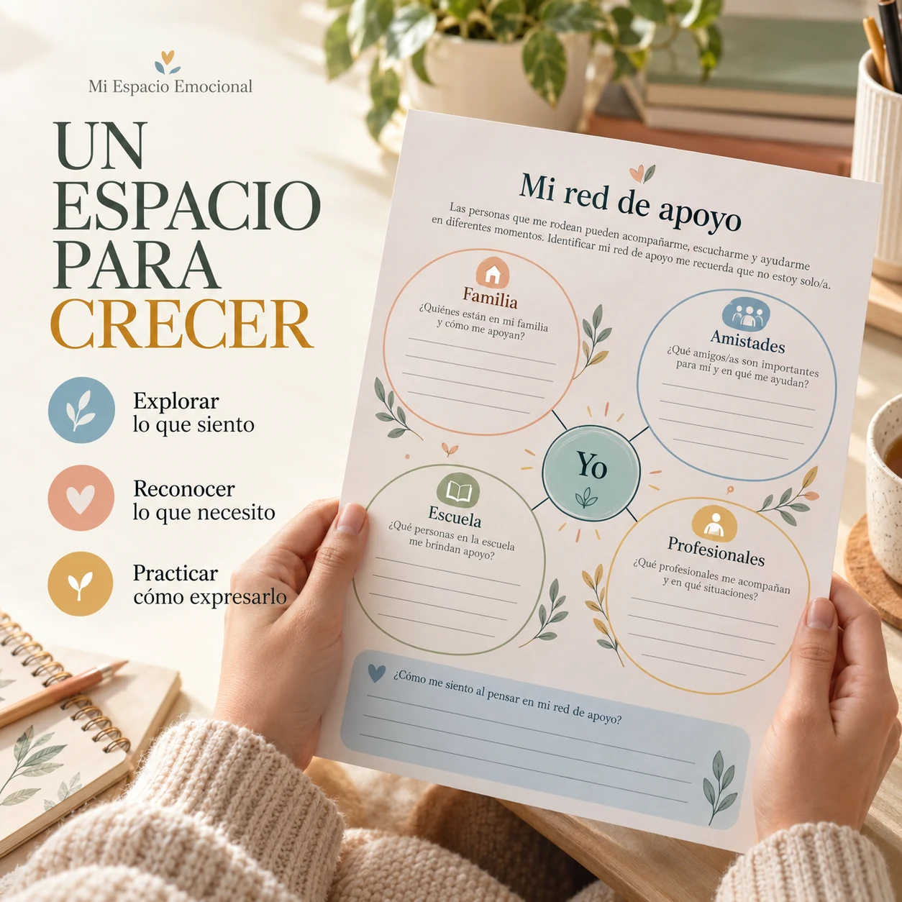

Reconocer una idea
El iceberg distingue lo que otras personas ven de lo que puede estar ocurriendo por dentro.



Cuaderno de Salud Mental para Adolescentes. Actividades visuales sobre ansiedad, autoestima, estrés y emociones, para escribir, reflexionar y abrir una conversación a su ritmo.
QUIERO EL CUADERNO POR US$12 → PDF imprimible · A4 y carta · Un solo pago Primero quiero ver las páginas ↓Entre los exámenes, los mensajes y las expectativas, puede ser difícil explicar lo que está pasando por dentro. Y para quien acompaña, también puede ser difícil saber por dónde empezar.
Una pregunta concreta y un espacio para escribir ofrecen un punto de partida. Sin exigir una conversación perfecta ni completar todas las hojas de una vez.
Así se utiliza una actividad del cuaderno:
El iceberg distingue lo que otras personas ven de lo que puede estar ocurriendo por dentro.
Una emoción que no mostró. Una preocupación. Algo que necesitaba y no expresó.
Puede guardar la hoja para sí o usar una parte para iniciar una conversación con alguien de confianza.
Las hojas combinan una idea breve con preguntas para observar una experiencia concreta.
“Es importante reconocer tus emociones.”
Un consejo útil, pero todavía queda la pregunta: ¿cómo empiezo?
“Una emoción que no mostré fue…”
Una frase para completar, espacio para pensar y libertad para elegir qué compartir.
Estas son páginas del PDF de 46 páginas. Toca cualquiera para verla completa.
Situaciones, pensamientos, señales del cuerpo y necesidades.
Estrés, organización, perfeccionismo y decisiones cotidianas.
Fortalezas, valores, imagen corporal y comparación en redes.
Límites, amistades, familia, apoyo y planes para el futuro.
Puede empezar por el tema que le interesa hoy. No necesita completar las 46 páginas en orden.
Abre el archivo en un dispositivo compatible o imprime las hojas que quiera completar. Para escribir sobre el PDF en pantalla, utiliza una aplicación de anotación.



Escenas ilustrativas de uso. Las páginas de la sección anterior muestran el diseño del PDF.
Que buscan una actividad concreta para acercarse a lo que vive un adolescente, respetando su ritmo y privacidad.
Que desean conocer un recurso de reflexión para adolescentes y valorar cómo encaja en su contexto educativo.
Que quieren revisar hojas visuales y decidir, según su criterio profesional, si complementan su trabajo.
Que prefieren empezar escribiendo, dibujando o pensando una respuesta antes de ponerla en voz alta.
Ya están dentro de las 46 páginas. Incluidos en el mismo pago.
Una hoja para observar qué ocurrió, cómo se sintió y qué recurso quiere probar. Puede imprimirla de nuevo.
INCLUIDOPreguntas para reconocer una experiencia, algo que ayudó y un siguiente paso posible.
INCLUIDOFrases para recortar, guardar o adaptar con sus propias palabras.
INCLUIDOOrientaciones para familias y educadores sobre escucha, privacidad y formas de ofrecer apoyo.
INCLUIDOUsa un ejemplo inventado, sin datos personales, y prueba esta petición en una herramienta adecuada para su edad:
“Ayúdame a dividir una tarea escolar en pasos de 15 minutos. Pregúntame cuánto tiempo tengo y qué parte me cuesta. No resuelvas la tarea por mí.”
¿Protegimos la privacidad? ¿La información puede comprobarse con fuentes originales o con un docente? ¿La respuesta ayuda a pensar o está decidiendo por nosotros? Revisen juntos la edad mínima y las condiciones de la herramienta.
Práctica disponible en esta página. El producto comprado es el PDF; no incluye un chatbot ni asesoramiento automatizado sobre salud.
Comentarios de Etsy proporcionados para esta página, traducidos al español. Corresponden a otro producto de referencia; no son reseñas de esta edición de Mi Espacio Emocional.
“¡Una herramienta muy útil para terapeutas!”
“Fácil de imprimir al comprar la versión descargable.”
“¡Buena calidad y muy buen precio!”
“¡Me encantó! Es genial.”
“¡Perfecto para un orientador escolar!”
Los enlaces remiten a perfiles. La compra, el producto reseñado y la puntuación no han sido verificados.
46 páginas en español. Un solo pago. Sin suscripción.
De US$295 por
Ahorras US$283 · Pago único
QUIERO MI CUADERNO AHORA →Compra procesada por Monetizze. El importe y las opciones en moneda local se muestran en el checkout. Producto digital; no se envía un libro físico.
Revisa el producto, el importe y los medios de pago disponibles en tu país.
Utiliza un correo al que tengas acceso y conserva la confirmación de Monetizze.
Sigue las instrucciones de entrega de tu compra. Abre el PDF e imprime la primera actividad que quieras usar.
Las seis vistas previas muestran hojas del PDF, con sus preguntas y espacios para responder.
El pago se realiza en Monetizze. Aquí no se solicitan datos de tarjeta.
Consulta en el checkout las condiciones de compra, entrega y reembolso antes de pagar.
Un cuaderno digital de 46 páginas en español, en PDF, con versiones A4 y carta. Contiene portada, orientaciones, actividades, registros, recordatorios, guía para acompañantes y fuentes.
Es digital. No hay envío de un libro físico. Puedes abrirlo en un dispositivo compatible con PDF o imprimir las páginas que quieras utilizar.
Para adolescentes de 13 a 18 años. Quien acompaña puede revisar cada actividad y valorar si se adapta a la edad, las necesidades y el contexto de esa persona.
Puedes volver a imprimir las hojas para uso personal. Los registros diario y semanal están pensados para reutilizarse. La compra no incluye permiso de reventa ni de distribución pública.
Se puede visualizar en dispositivos compatibles. Para escribir directamente sobre el PDF necesitas una aplicación que permita anotaciones. No incluye una aplicación propia.
No. Puede elegir una hoja, saltar preguntas y volver otro día. Conviene acordar cómo se usará el material y respetar la privacidad. Compartir una respuesta es una invitación.
Es un recurso educativo de reflexión y bienestar emocional. No diagnostica ni trata trastornos ni sustituye la atención de un profesional. Un profesional puede valorar si alguna hoja resulta adecuada como complemento de su trabajo.
El producto de pago es el cuaderno PDF. En esta página tienes una práctica de uso consciente de IA para tareas escolares. No se incluye un chatbot ni consultas automatizadas sobre salud.
El botón te lleva a Monetizze, donde se muestran el importe, los medios de pago y las condiciones de entrega. Tras la compra, revisa la confirmación y las instrucciones de acceso. Guarda el correo de confirmación por si necesitas consultar tu pedido.
Esta oferta es de pago único, sin mensualidad. Revisa y acepta las condiciones de compra y reembolso que Monetizze muestra antes de finalizar el pago.
Empieza con una pregunta, una hoja y el espacio para escuchar.
QUIERO EL CUADERNO POR US$12 →46 páginas en español · PDF imprimible · Pago único